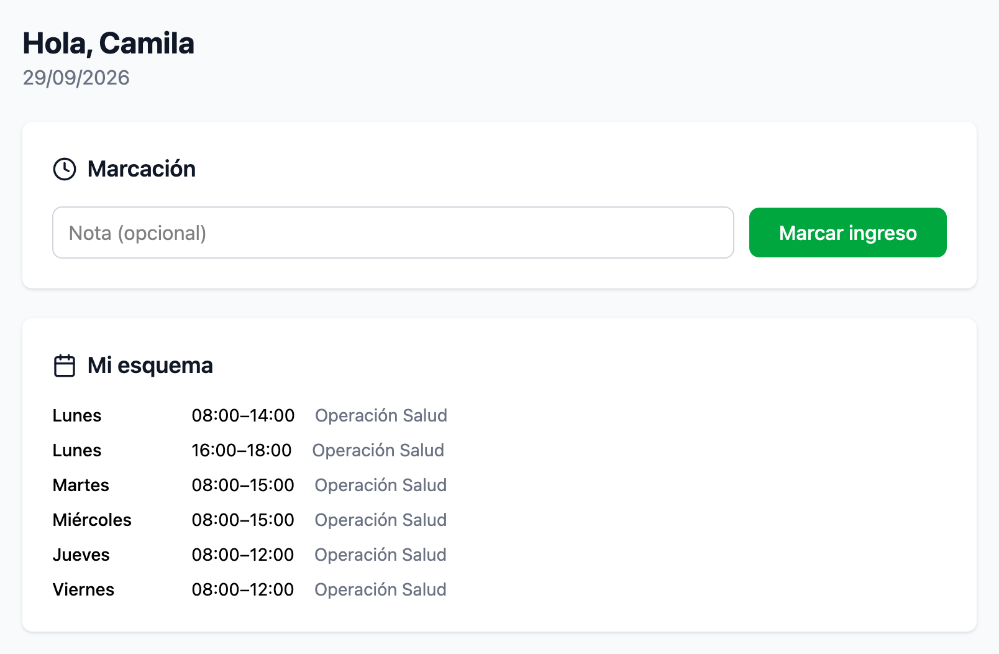
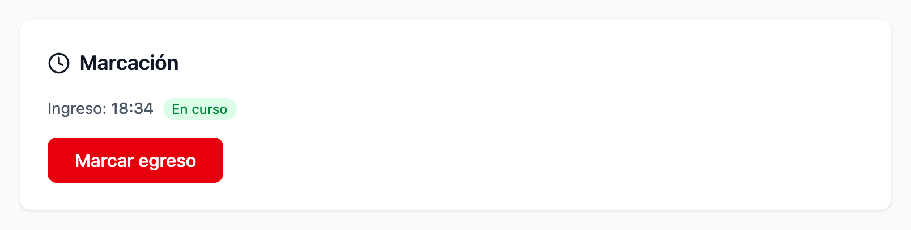
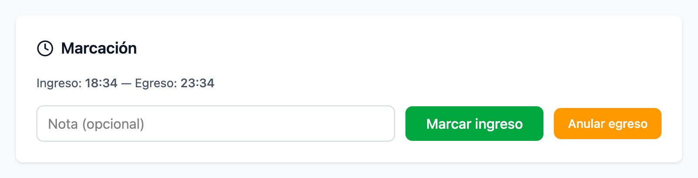

Tu única tarea en el sistema es marcar. Diez segundos por tramo, y tu día se paga solo.
Si leés sólo esta página, alcanza.
Con tu mail y tu contraseña. Es la única pantalla que necesitás.
Si trabajás mañana y tarde, son dos ingresos y dos egresos.

Paso a paso, y la regla de los tramos.


Y por qué conviene marcar bien.
| Qué pasó | Qué hacés |
|---|---|
| Marcaste el egreso antes de tiempo | Anular egreso, dentro de los 5 minutos, y seguís trabajando. |
| Te olvidaste de marcar | Avisale a tu supervisor: él carga la marcación que falta. |
| Tocaste dos veces seguidas | No pasa nada: una entrada y una salida en el mismo minuto no suman horas. Si quedó raro, avisá. |
| Tu esquema no es el que acordaste | Decíselo a tu supervisor antes del cierre del mes. |
Tus horarios de la semana.
Vacaciones, licencias o cambios de horario ya cargados.